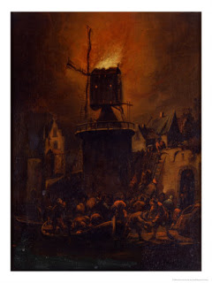

Menachot 23 - Flour Offerings Mixed Together
If two flour offerings became mixed together, our problem is how to take a handful from each. If one can take off a handful from one, making sure that no flour from the other offering is mixed in, the offerings will still be valid.
If a handful became mixed with another flour offering, from which a handful has not been taken yet, then nothing can be done about it. One cannot burn the mixture because of the flour of the other offering mixed it, since only the handful can be burned. Neither can one take two handfuls. If the kohen went ahead and burned it on the Altar anyway, it counts for the owner of the first offering, but not for the owner of the second offering, into which the handful fell.
The same is true when a handful from an offering fell into the remnants of the other offering: the mixture should not be burned, but if one did burn it on the Altar, this counts for the owner of the handful.
Art: Adriaen Lievensz van der Poel - The Burning Windmill